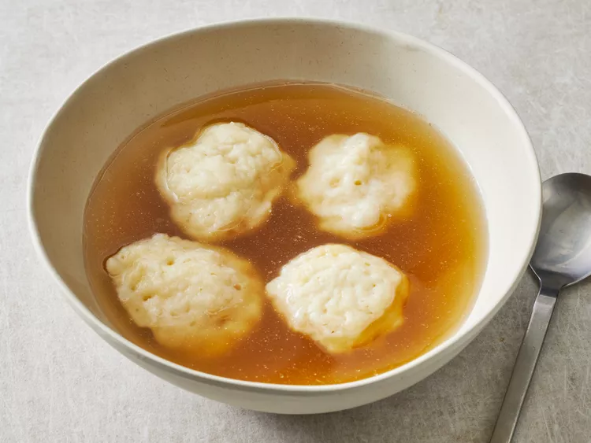

Homemade Dumplings

Description
Looking to make a hot steamy bowl of dumplings? Look no further.
You've found the perfect recipe!
Recipe Ingredients
- 1 cup all-purpose flour
- 2 teaspoons baking powder
- 1 teaspoon white sugar
- ½ teaspoon salt
- 1 tablespoon margarine
- ½ cup milk
Steps
Step 1
Stir together flour, baking powder, sugar, and salt in a bowl.
Step 2
Cut in butter until mixture is crumbly. Stir in milk and mix until a batter forms that is
thick enough to be scooped with a spoon.
Allow batter to rest for 3 to 5 minutes.
Step 3
Drop batter by spoonfuls into boiling stew or soup.
Cover and simmer without lifting the lid for 15 minutes. Serve.